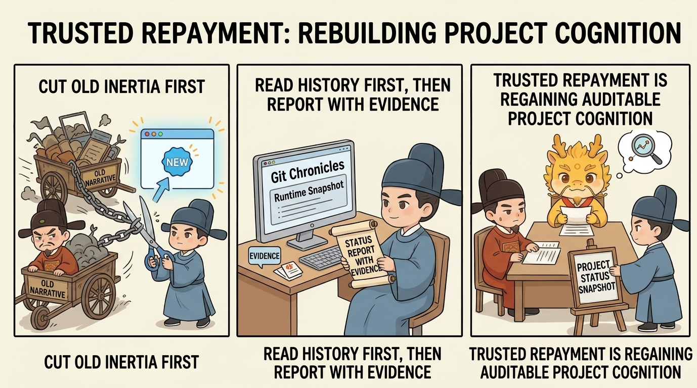

Deep Water
Cyber Cognitive Debt

Cyber Cognitive Debt: The Widening Gap, Warning Signals, and Credible Repayment
Table of Contents
- What This Page Solves
- The Widening Gap: Where Cognitive Debt Actually Comes From
- Why It Will Not Heal on Its Own
- Warning Signals: When You Have Fallen Behind the System's Real State
- Copy-Paste, Dual-Track Audit, and Git Chronicles: They Mainly Slow the Expansion of Debt
- Credible Repayment: How to Rebuild Project Understanding Without Lying to Yourself
- Why This Counts as Credible Repayment
- The Four Most Common Drifts
- One-Line Conclusion
- Related Pages
What This Page Solves
When many people first hear the phrase "cognitive debt," they usually interpret it as one of two things.
The first interpretation treats it as a personal failure: maybe I am not diligent enough, not smart enough, not disciplined enough, and that is why the AI-produced system has outrun me.
The second interpretation goes to the opposite extreme: if the issue is merely that my understanding has fallen behind, then surely I can carve out one large block of time, reread the whole system, understand all the old code again, and repay the debt completely.
Both interpretations are wrong.
In Cyber-Ming-Protocol, cognitive debt is not first and foremost a moral issue. It is a structural issue. And it is not a static old balance that will eventually be filled in by nature. It is a dynamic gap that keeps widening as the system continues to change.
So this page is not really about "how to make the human understand everything again." It is about four linked questions:
- Where cognitive debt comes from - that is, what the widening gap in the title really is
- What warning signals usually appear when that gap starts growing
- Why copy-paste, dual-track audit, and Git chronicles mainly slow the expansion of debt instead of repaying it for you
- How to do a credible repayment when the dangerous point really arrives
In other words, although the title says "the widening gap, warning signals, and credible repayment," there is a missing middle layer that has to be nailed down: how to slow the expansion. Without that layer, the page breaks into three fragments. With it, pathology, symptoms, buffering, and treatment form one continuous chain.
The Widening Gap: Where Cognitive Debt Actually Comes From
We need to begin from a reality already established in Why AI Coding Has Blurred the Boundary Between CS and Management:
AI coding keeps widening the gap between the speed at which the system changes and the speed at which humans can understand it reliably.
In the era of fully manual coding, the person writing the code also bore most of the cost of understanding it. The code might still be messy. Names might still drift. Even a few weeks later, it might already feel unfamiliar. But that unfamiliarity was still broadly constrained by the speed of human production itself. You wrote a certain amount, forgot a certain amount, and reloaded a certain amount, all at roughly the same order of magnitude.
Once AI moves into the executor position, the structure changes. In a short span of time, it can:
- Push changes across many files at once
- Run repeated attempts across several chains
- Produce explanations, summaries, and next-step plans quickly
- Grow the next round of changes immediately on top of the previous round's results
Meanwhile, the human speed of restoring a trustworthy understanding of the system, building a reliable mental model, and integrating local changes back into the whole does not rise in proportion.
Cognitive debt appears exactly at this seam.
It is not simply "code I have not had time to read yet." It is:
- The real system has already moved to a newer state
- The human's trustworthy understanding is still stuck at an earlier state
- The distance between those two states is still growing
That distance is the widening gap of cognitive debt.
Why It Will Not Heal on Its Own
This is one of the most important judgments on the page:
Cognitive debt is not a pile of code waiting to be understood sooner or later. It is the widening gap between the speed of system change and the speed of trustworthy human understanding.
Under high-throughput AI coding, that gap does not close itself. It can only be governed, slowed, or forcibly repaid once it enters a dangerous zone.
The reason is not complicated. You think you are repaying a static old balance. In reality, the situation is usually this:
- While you are catching up on yesterday's changes, the system is still changing today
- While you just finished re-understanding one module, the executor may already have pushed a new chain elsewhere
- While you just grasped one local mechanism, new evidence, new commits, and new assertions have already moved the system into yet another state
So the question is never simply "is it theoretically possible to understand everything again in one pass?" The real question is whether that cost is sustainable, whether the rhythm can keep up, and whether the result will still remain valid as the project continues to grow.
In deep water, the answer is usually no.
That is exactly why Cyber-Ming-Protocol never promises zero cognitive debt. It acknowledges that debt will keep being generated, and then shifts focus to three more realistic tasks:
- Notice it early
- Slow its expansion as much as possible
- Perform a credible repayment when it truly must be handled
Warning Signals: When You Have Fallen Behind the System's Real State
The dangerous part of cognitive debt is not that it suddenly explodes one day. The more common danger is that it gives off warning signals in advance, and most people dismiss those signals as normal complexity.
The worst moment is not "I admit I no longer understand this." It is this:
I still think I understand it, but in reality I have already fallen behind the system's current state.
The most common warning signs are usually these.
First, Your Changes Depend More and More on Trial and Error Instead of Judgment
You are not completely unable to move forward. In fact, you often still can. But each step starts feeling more and more like gambling. You roughly know where the problem may be, yet it becomes harder and harder to say in advance:
- What exactly this step is changing
- Why this step should work
- What evidence should appear once the step is done
That means your actions are starting to outrun your trustworthy understanding.
Second, Every Explanation Sounds More and More Like a Rehearsed Closing Statement Instead of a Mechanism
When you find yourself leaning more and more on the executor's rhetorical phrases - "it should already be fixed," "the logic is already covered," "it is probably here" - instead of being able to point to:
- Which change introduced what
- Which assertion changed
- Which log or artifact proves what
that means you are outsourcing explanatory power to the executor's rhetoric rather than holding the system through real handles.
Third, The Same Question Keeps Pulling You Back into Old Logs, Old Commits, and Old Conversations
Whenever understanding one concrete problem requires you to rescan lots of files, reread a large old chat, and guess the path of progress all over again, it means you no longer have enough local anchors. You are not repaying debt in a targeted way. You are rereading in bulk.
Fourth, Your Answer to "Where Does the Project Actually Stand?" Gets More and More Vague
This is an especially dangerous signal. You may still be able to say vague things like "that feature is probably done" or "that path was already connected last time." But as soon as you ask:
- Which commit pushed it to the current state
- What evidence justified releasing it at the time
- What the biggest unresolved blocker is right now
your answer starts becoming thin very quickly.
That means cognitive debt is no longer just swallowing details. It is swallowing your ability to judge system state itself.
So the most frightening part of cognitive debt is not "I temporarily forgot some code." It is this: the system still appears to be advancing, but your answer about the current state increasingly sounds like an impression rather than evidence.
Copy-Paste, Dual-Track Audit, and Git Chronicles: They Mainly Slow the Expansion of Debt
This is the section most likely to get muddled unless we state it very cleanly.

Many people instinctively treat copy-paste, dual-track audit, and high-frequency historical traces as debt-repayment methods. But the more accurate statement is: they are not repayment first. They are mechanisms for slowing expansion first.
In other words, they solve "how not to let the debt grow too fast," not "how to settle it once and for all."
First, Copy-Paste Changes the Slope of Growth
Why does copy-paste matter? Earlier pages have already explained the basic reason: in AI collaboration, copying logs, restating checklists, routing assertions, and carrying back doubts is not menial shipping. It is the human exercising physical routing authority.
Push that one step further, and its real role in cognitive debt becomes clearer: it lowers the slope at which the widening gap continues to expand.
As long as key materials have to be routed through the human:
- Noise is less likely to spread as one giant package
- False premises are less likely to inflate at multiple positions at once
- The human is less likely to remain absent from the key points of arbitration
- A polished black-box conclusion is less able to impersonate truth directly
Copy-paste does not magically make you understand the whole system again on the spot. But it does make the debt accumulate more slowly, more finely, and in more separable chunks. It also pushes the truly dangerous point further back.
That is why it is not in tension with later repayment.
Copy-paste can greatly reduce the growth rate of cognitive debt, but it cannot guarantee that the total gap will never enter the danger zone. It postpones the crisis. It does not cancel the crisis.
Second, Dual-Track Audit Prevents Fake Understanding from Continuing to Compound Debt
The value of dual-track audit here is also not that it makes the whole system fully legible. Its value is that it stops the system from growing new debt along a false narrative.
Without an independent audit position, the executor is most likely to stitch these things back together into one beautiful story:
- Its own plan
- Its own progress
- Its own summary
- Its own explanation of what counts as completion
At that point, cognitive debt is no longer just "the human has not understood enough." It becomes worse: the human starts believing the wrong understanding.
The meaning of dual-track audit is that another narrow-context chain keeps asking:
- Why does this assertion hold?
- Do this red light and this green light actually refer to the same problem?
- Is this evidence packet really from the current run?
- Is a closing statement being used to impersonate completion fact?
That does not directly repay old debt. But it continually prevents new debt from expanding quickly under fake explanations.
Third, Git Chronicles Are Not Repayment Themselves - They Preserve Historical Material for Future Repayment
High-frequency Git chronicles work the same way.
Their greatest value is not that they make you instantly "understand the project better" in the moment. Their greatest value is that they preserve a readable historical record for the day when repayment becomes unavoidable. Without that record, you are no longer facing debt. You are facing an unpayable black fog.
So the conclusion of this whole section is really:
- Copy-paste slows the growth of debt
- Dual-track audit stops fake understanding from amplifying debt further
- Git chronicles preserve the historical record needed for future repayment
Together, the three of them solve slowing the expansion.
Only when the total gap still accumulates into the danger zone, and the human answer to "where does the project actually stand?" begins to distort, does the final piece - credible repayment - truly enter.
Credible Repayment: How to Rebuild Project Understanding Without Lying to Yourself
This is the final load-bearing beam of the page.
Credible repayment of cognitive debt does not rely on the original author remembering the project, and it does not rely on a polished summary from the executor. It relies on a reconstruction of the current project state that uses Git chronicles as historical material, logs and tests as evidence, and interrogation from a fresh window as the questioning mechanism.
Once a project has entered nested contracts and long-running execution, dev_repo/state.json and dev_repo/tree.md add another important layer: they tell you the active contract, whether the parent is paused, and where execution returns afterward. That lets repayment start from runtime truth instead of from competing progress narratives.
One clarification matters here: this section only explains its role in repaying debt. It does not expand the full ritual of renewal. The complete renewal and handover method is developed in Seven Stars Renewal. Here we care about one narrower question: once you already know that cognitive debt must be handled, how do you reconstruct current project state without lying to yourself?
The steadiest method can be compressed into four steps.
Step 1: Open a Fresh Executor Window
The point here is not mechanically switching chat tabs. The point is to cut, as much as possible, the forward-momentum inertia already formed in the old window.
The old window is most likely to keep speaking through:
- The task narrative it has already grown used to
- The explanatory path it has already used to defend itself
- The success fantasy polluted by the feeling of progress
So the first step in credible repayment is not asking the old narrative where the project stands. It is handing the question to a relatively clean position and making it read the historical record first, then submit a report as if it were taking over the project fresh.
Step 2: Feed It the Git Chronicles and the Current Runtime Snapshot First, Then Ask Where the Project Actually Stands
The key here is not to let the new window improvise a neat summary. The key is to constrain its understanding through the chronicles before it speaks.

What you really want it to do is this:
- If the repo already has
dev_repo/, readstate.json,tree.md, and when neededjournal.jsonlfirst - Read the recent relevant Git chronicles first
- Describe the current project state on top of those chronicles
- Attach the matching commits, logs, assertions, or key code snippets to every major judgment whenever possible
That step matters enormously because it drags project-state judgment back out of impression flow and into documentary flow.
The cleanest single sentence for this step is:
Credible repayment is not asking the new window to "understand the project again." It is asking it to submit an evidence-backed project status report under the discipline of the Git chronicles.
Step 3: Continue Interrogating When Necessary, but Every Follow-Up Must Carry Evidence
If the output of step two is still merely a respectable summary, that is not enough. The whole reason this is called credible repayment is that it must survive continued questioning.
The most common and most valuable follow-up questions usually land on points like these:
- Which commits support this conclusion?
- What is the active contract right now, is the parent paused, and where does execution return afterward?
- Did this feature pass a real test, or has the executor merely claimed that it passed?
- What is the biggest unresolved blocker right now, and where is the corresponding log or error?
- Which key source segments are involved here? Please provide only the minimum necessary snippets.
- Which parts are already backed by physical evidence, and which parts are still provisional judgment?
Once every follow-up question is forced to land back on commits, logs, tests, assertions, or key code snippets, debt repayment stops being chat and becomes an auditable inventory process.
Step 4: Produce a Current Project Snapshot in the End
If credible repayment does not produce a result artifact, it easily collapses back into loose discussion. So it must end in a current snapshot that answers at least:
- What is already complete
- Which completed parts are supported by evidence
- Which parts are only temporary judgment and not fully established yet
- What the biggest unresolved blocker is
- What the safest next starting point is
If the project already has dev_repo/, that snapshot should preferably keep living in state.json, tree.md, and the surrounding runtime artifacts instead of ending as one more isolated chat answer.
At that point, one segment of cognitive debt has truly been repaid. Not because you suddenly understand everything, but because you have regained a project state that can be audited, questioned, and used to keep moving.
Why This Counts as Credible Repayment
The key sentence here is this:
Credible repayment does not rely on human memory to recall project truth. It uses historical material, evidence, and questioning to compress the current project state back into a snapshot that can be audited.
It is more reliable than an ordinary retrospective precisely because it splits apart several things that are often confused:
- Git chronicles tell you how the system became what it is now
- Logs, tests, and assertions tell you which judgments actually stand up
- A fresh window's questioning suppresses the inertia of the old narrative
- The resulting project snapshot turns this repayment into the starting point of the next advance
That is the fundamental difference between credible repayment and an ordinary summary.
An ordinary summary is closer to recollection. Credible repayment is closer to reconstruction.
The Four Most Common Drifts
Drift One: Treating Cognitive Debt as a Matter of Personal Effort
That miswrites a structural issue into a moral issue. In the AI era, cognitive debt is first a speed-gap problem, not a shame problem.
Drift Two: Treating Copy-Paste, Dual-Track Audit, and Chronicles as Repayment Itself
Those mechanisms first solve slowing expansion, not final settlement. Once you mix the two together, the whole method starts to dissolve.
Drift Three: Still Using the Old Window's Summary Inertia During Credible Repayment
If you let the original executor keep summarizing along the narrative it already paved for itself, what you get is usually not a reconstruction of the current state. It is just an upgraded version of the old explanation.
Drift Four: Failing to Produce a Final Project Snapshot
Without a concrete result artifact, so-called repayment quickly collapses back into a conversation that sounds plausible but gives you nothing stable to stand on in the next round.
One-Line Conclusion
What cyber cognitive debt is really trying to nail down is not "the human must understand everything again," but this:
Cognitive debt comes from a widening gap. First use copy-paste, dual-track audit, and Git chronicles to slow its growth and push the dangerous point further back. Once it really approaches the danger zone, perform a credible repayment through a fresh window, Git-chronicle history, evidence-based questioning, and a current project snapshot.
Only then does it remain governable debt instead of growing into a forbidden zone that nobody dares to touch.